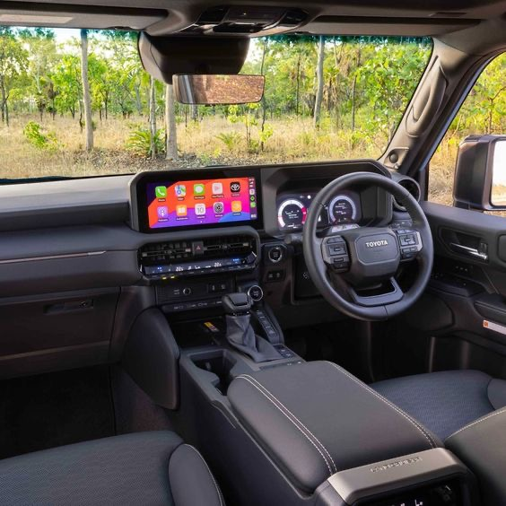
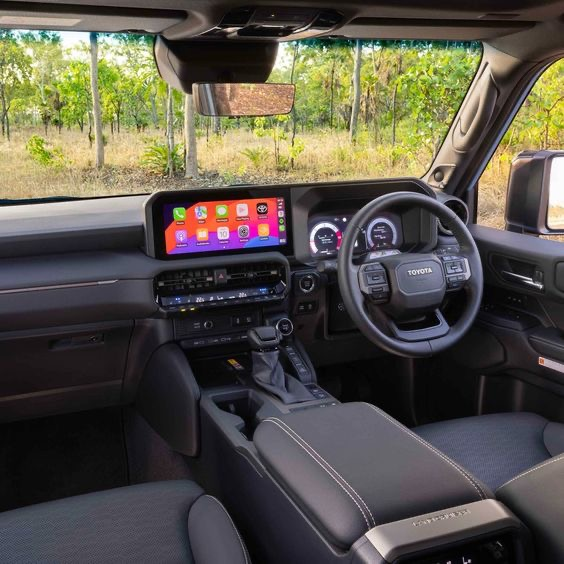
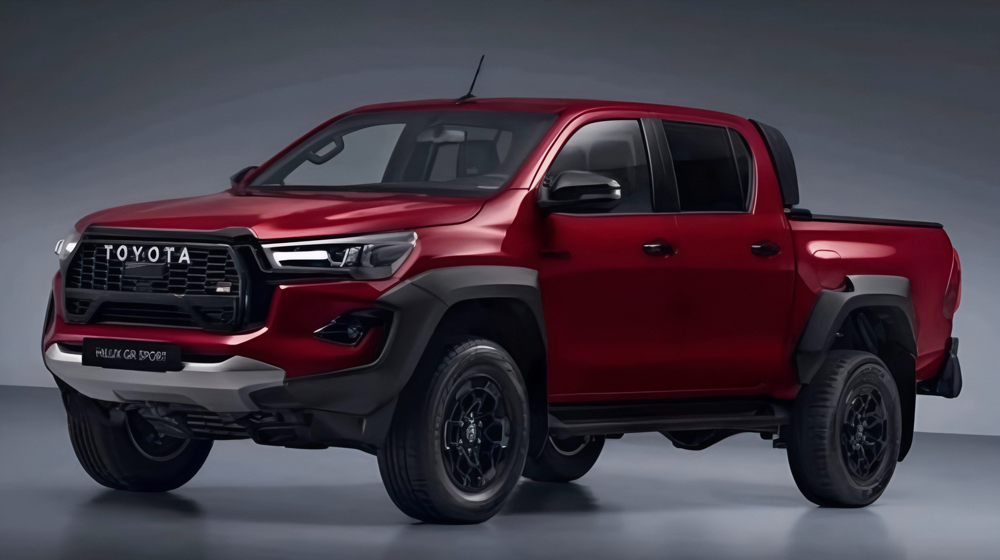
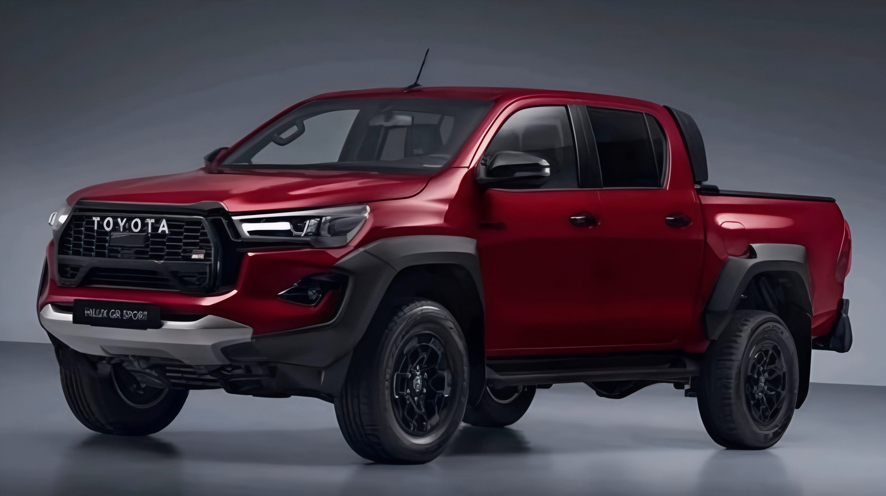

Concebido para overlanding pronto a usar (out-of-the-box), apresentando um diferencial com bloqueio adicional e barras estabilizadoras que se podem desligar (disconnecting sway-bars) para uma maior articulação dos eixos.

Espaço, estilo e tecnologia híbrida. Um SUV pensado para o conforto e aventura com segurança total.

Hot hatch de alta performance com motor 1.6L turbo e 330cv, atinge os 230km/h, com design moderno e espaçoso.

 

Potência e robustez para todos os terrenos. A pick-up mais confiável da Toyota, com tecnologia 4x4 avançada.
SUV Toyota moderno e familiar, tração 4x4, sensores de estacionamento e motor 2.8L e uma velocidade máxima de 240km/h.
Cupê mais popular e confiado em Moçambique com um motor 1.5L, espaçoso e econômico em viagens longas e curtas.